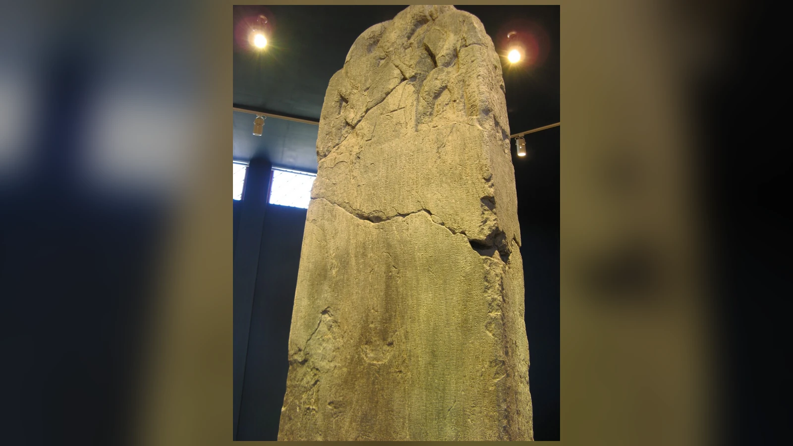
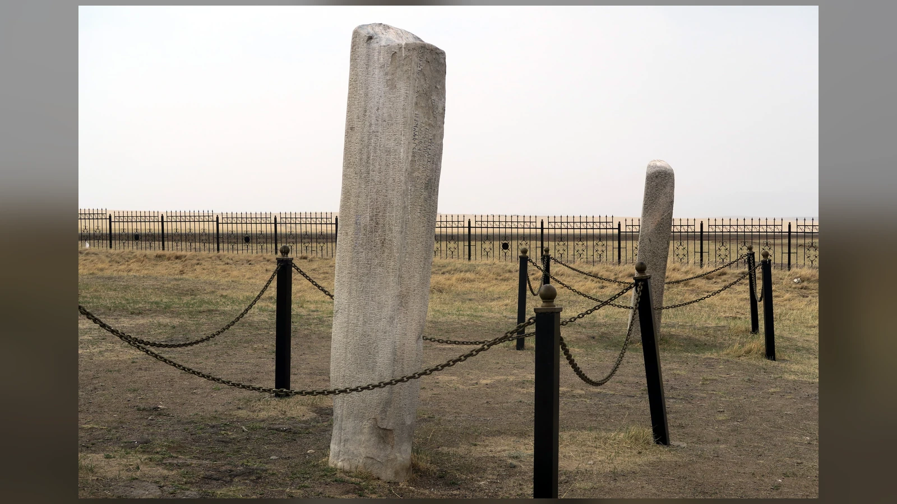
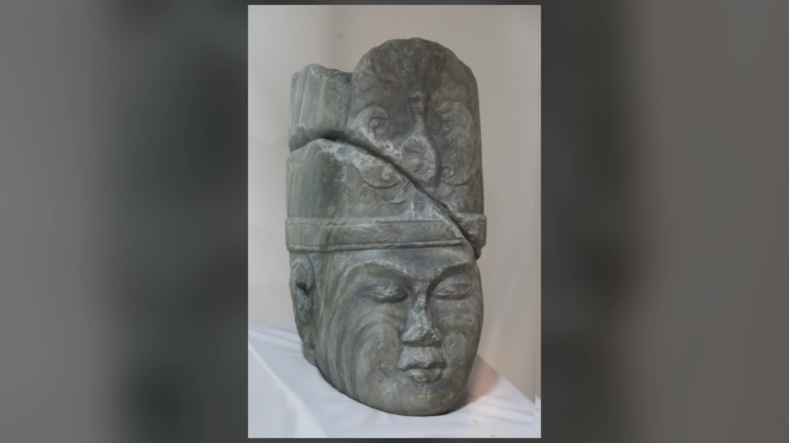
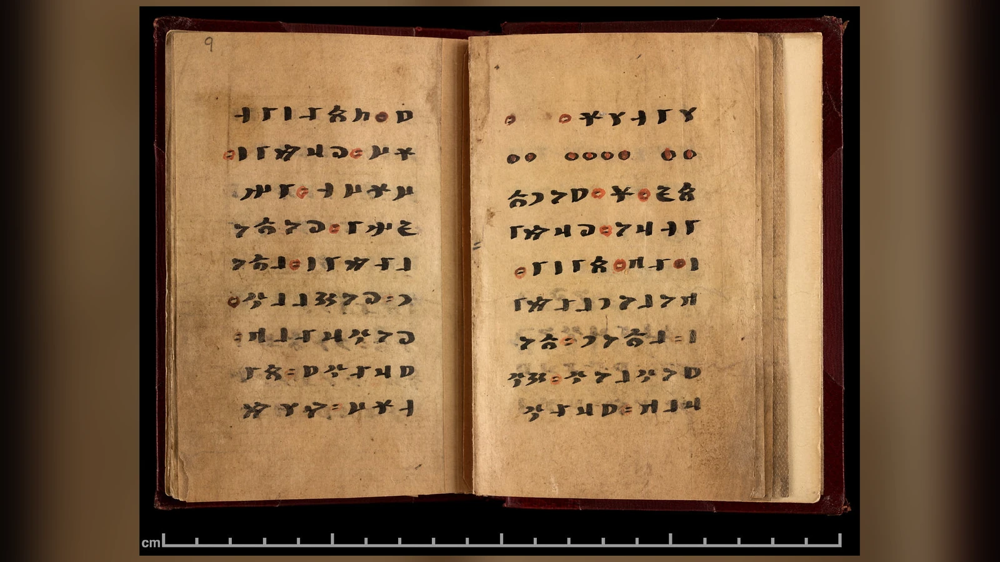

Kül Tigin’in 732’de dikilen anıtında, dağılmış bir halkın yeniden toparlanması göğün iradesiyle açıklanır. Tengri, İlteriş Kağan ile İlbilge Hatun’u yükseltmiş, Türk halkının yok olmaması için onlara destek vermiştir. Aynı taşta savaşlardan, yenilgilerden ve aç kalan insanların doyurulmasından da söz edilir. Göksel güç, yeryüzündeki hayatın uzağında durmaz; hükümdarın sorumluluğuna, halkın geleceğine ve devletin ayakta kalmasına bağlanır.
Tengri, eski Türkçe metinlerde gök ve tanrısal kudret anlam alanlarıyla kullanılan bir sözcüktür. Özellikle sekizinci yüzyıl Göktürk yazıtlarında üstün kutsal otoriteyi ifade eder; kağanın yükselmesi, halkın korunması ve siyasi düzenin bozulması bu otoriteyle ilişkilendirilir. Bugün Gök Tanrı inancı veya Tengricilik denen gelenekler bu kavram çevresinde ele alınır. Ancak Göktürk, Uygur, Sibirya Türk toplulukları ve Moğolların yüzyıllara yayılan inançlarını, değişmeyen kuralları olan tek bir dinin aynı biçimde yaşanmış örnekleri sayamayız.
Tengri kimdir sorusunun tarihsel cevabı bu iki gerçeği birlikte taşır: Eski Türklerin kimi topluluklarında gökle bağlantılı yüce bir kutsal güçten söz ediliyordu; fakat onun nasıl düşünüldüğü, başka kutsal varlıklarla ilişkisi ve hangi törenlerle anıldığı dönemden döneme değişebiliyordu. Üstelik elimizdeki en güçlü belgelerin çoğu hükümdarların kendilerini anlattıkları metinlerdir. Kağanın inancını gösteren bir yazıt, çadırda yaşayan herkesin günlük ibadetini aynı ayrıntıyla açıklamaz.
Bu dünyanın kutsallığı gökle sınırlı değildi. Umay’ın koruyuculuğu, yurdun yer ve sularına verilen değer, kurban törenleri ve ölüm karşısında sürdürülen anma gelenekleri Tengri inancının çevresinde yer alıyordu. Bu unsurların birlikte nasıl işlediği, eski Türklerin dinini tek bir tanrının biyografisinden daha geniş bir konu hâline getirir. Tengri’yi tanımak için onun hangi ailenin çocuğu veya hangi tanrının rakibi olduğunu aramaktan çok, insanların hayatında neyi açıkladığına bakmak gerekir.
Tengri Kimdir? Sözcüğün Gök ve Tanrı Anlamları
Eski Türkçede teŋri biçimiyle yazılan kelime, bağlama göre gökyüzünü veya tanrısal varlığı ifade edebilir. Modern Türkçedeki “Tanrı” aynı kelimenin tarihsel devamıdır; “Tengri” yazımı ise eski biçimi görünür kılmak için yaygınlaşmıştır. Kök veya gök nitelemesiyle kullanılan ifadelerde fiziksel göğün rengi, yüksekliği ve kutsallık düşüncesi birbirine yaklaşır. Fakat her metindeki her “gök” sözcüğünü doğrudan kişisel bir tanrı adı diye çevirmek de, her “Tengri”yi yalnızca atmosfer olarak anlamak da metni yoksullaştırır.
Dil araştırmaları, Türkçe biçimlerle Moğolcadaki tenggeri/tenger arasındaki yakınlığa dikkat çeker. Bu yakınlık, bozkır dünyasındaki uzun temasları anlamak için önemlidir; ancak sözcüğün nihai kökeni ve hangi dilde önce ortaya çıktığı gibi meselelerde kesinliği aşan etimolojik hikâyeler dolaşır. Sümerce dingir ile Tengri arasında ses benzerliği kurup doğrudan tarihsel akrabalık ilan etmek için gereken düzenli dilbilimsel kanıtlar bulunmaz. Benzer sesler, tek başına binlerce yıllık aktarım zinciri kurmaz.
Orhun yazıtlarındaki Tengri, çoğu zaman bir eylemin ve siyasi sonucun açıklamasında yer alır. Kağanın tahta çıkması, halkın yeniden toplanması veya düşman karşısında başarı kazanması göksel iradeye bağlanır. Buradaki işlev, bugünkü anlamda soyut bir doğa kavramından daha geniştir. Bununla birlikte yazıtlar Tanrı’nın biçimini, bütün sıfatlarını ve inananların uyması gereken ayrıntılı bir ibadet düzenini listelemez.
Bugün kullanılan “Gök Tanrı” ifadesi, tarihsel sözcükleri Türkçede anlaşılır kılan yararlı bir karşılıktır. Yine de tek bir özel isim gibi bütün topluluklara ve bütün dönemlere uygulandığında yanıltabilir. Bir Uygur Budist metnindeki tanrı sözcüğü ile bir Göktürk anıtındaki Tengri’nin bağlamı farklıdır. Aynı kelimenin yaşaması, her kullanımda aynı teolojik sistemin sürdüğünü kanıtlamaz.
Kavramın gücü biraz da gök ile iktidarın birbirinden kolay ayrılmamasındadır. Gökyüzü her topluluğun üzerinde bulunur, belirli bir boyun sınırları içinde kalmaz. Göksel otoriteye dayandırılan hükümdarlık iddiası da tek bir obanın ötesinde, geniş bir siyasi düzeni meşrulaştırmaya elverişlidir. Bu, yazıtların anlattığı devlet fikriyle Tengri’nin neden bu kadar sık yan yana geldiğini açıklayan makul bir yorumdur; bütün eski Türklerin aynı felsefi açıklamayı benimsediği anlamına gelmez.
Orhun Yazıtlarında Tengri: Taşa Geçen İnanç
Tengri hakkında doğrudan Eski Türkçe tanıklık arandığında Orhun yazıtları temel başlangıç noktasıdır. Kül Tigin anıtı 732’de, Bilge Kağan anıtı 735’te dikilmiştir. Tonyukuk yazıtı da sekizinci yüzyılın ilk yarısına aittir; kesin tarihlendirilmesinde görüş ayrılıkları bulunur. Bu metinler aynı siyasi çevreye bağlı olmakla birlikte aynı kişinin aynı tarihte yazdığı belgeler değildir. Kül Tigin anıtında ağabeyi Bilge Kağan’ın sesi duyulur. Bilge Kağan için dikilen anıt da onun ölümünden sonra hazırlanmış, hükümdarın hizmetlerini büyük ölçüde onun ağzından anlatmıştır. Tonyukuk metni ise deneyimli bir devlet adamının sefer ve yönetim anlatısını öne çıkarır.
Kül Tigin yazıtının ünlü başlangıcında yukarıdaki mavi gök ile aşağıdaki yağız yerin oluşumu anılır; ardından insan topluluğu ve Türk hükümdarlarının düzen kurması anlatılır. Bu cümleler evreni ve siyaseti aynı çerçevede düşünür. Ancak buradan ayrıntılı bir yaratılış mitinin bütün aşamalarını çıkarmak mümkün değildir. Yazıt, göğün ve yerin nasıl meydana geldiğine dair uzun bir kozmogoni sunmaz; evrenin kuruluşunu hükümdarlık tarihinin önüne yerleştirir.
Kül Tigin yazıtının güney yüzünde Bilge Kağan, Tengri’nin lütfu ve kendisinde bulunan kut sayesinde kağan olduğunu bildirir. Doğu yüzündeki anlatıda ise önceki devletin çöküşü, kağanların yetersizliği, beylerle halk arasındaki uyumsuzluk ve Çin’le ilişkiler üzerinden açıklanır. Göksel irade, insan kararlarının yerine geçirilmez. Yazıt, siyasi felaketlerin sebeplerini tartışan ve gelecekte aynı hataların yapılmamasını isteyen bir hitabedir.
Tonyukuk yazıtında Tengri’nin yardımına ilişkin göndermeler, askerî strateji anlatısının içine yerleşir. Tonyukuk kendi aklını, istihbaratını, sefer kararlarını ve karşılaşılan güçlükleri anlatırken göksel desteği de siyasi başarıyla ilişkilendirir. Bu anlatım, insanların eylemleri ile kutsal otoritenin birbirini dışlamadığı bir düşünce dünyasına işaret eder. Komutanın plan yapması, zaferin Tengri’ye atfedilmesini gereksiz kılmaz; göksel destek de komutanın somut kararlarını ortadan kaldırmaz.
Yazıtların başka bir özelliği, Türkçe metinlerin yanı sıra farklı siyasi muhataplara yönelen unsurlar taşımalarıdır. Kül Tigin anıtının batı yüzündeki Çince metin, Tang sarayıyla diplomatik ilişkilerin de anıtın parçası olduğunu gösterir. Bu çok dilli anıt ortamı, kağanlığın kendisini yalnız iç topluluğuna değil komşu büyük güçlere karşı da temsil ettiğini hatırlatır. Tengri göndermelerini, bu geniş siyasi iletişimden kopuk bir dua kitabının satırları gibi okumak doğru değildir.
Sekizinci yüzyıl yazıtlarının tarihsel değeri çok yüksektir; çünkü eski Türkçe ifadeleri doğrudan taş üzerinde korurlar. Fakat bu değer sınırsız değildir. Yazıtı diktirenler hanedan ve devlet seçkinleridir. Kadınların, sıradan çobanların, farklı boyların veya yerel tören uzmanlarının kendi sesleri aynı yoğunlukta duyulmaz. Bir metinde Tengri’nin çok önemli olması, bütün yerel ritüellerin yalnız Tengri’ye yöneldiğini kanıtlamaz. Belgelerin güçlü olduğu yer ile sessiz kaldığı alanı ayırmak, tarihsel resmi daha güvenilir hâle getirir.

Kut, Kağan ve Göğün Verdiği Meşruiyet
Eski Türk siyasi düşüncesini anlamak için kut kavramı vazgeçilmezdir. Kut, bağlama göre hükümdarlıkla bağlantılı talih, yetki, kutsal destek ve meşruiyet alanlarını kapsar. Sözcüğü yalnızca modern Türkçedeki “şans” ile karşılamak, kağanlık ideolojisindeki işlevini daraltır. Kağan, iktidarını sadece soyuna veya ordusuna dayandırmaz; yönetme hakkını göksel destekle ilişkilendirir.
Bu destek, hükümdarın doğrudan Tanrı olduğu anlamına gelmez. Yazıtlarda kağanlar Tengri’nin yardımıyla yükseltilen ve görev üstlenen insan yöneticilerdir. “Tengri gibi” veya “Tengri’de olmuş” biçimindeki unvan ve sıfatları değerlendirirken eski Türkçenin dil yapısını ve dönemin siyasi söylemini gözetmek gerekir. Benzerlik ve meşruiyet ifadelerini hükümdarın ilahlaştırıldığına dair basit bir ilan gibi okumak tarihsel anlamı değiştirir.
Kut düşüncesi siyasi başarıyla yakından bağlantılıydı. Devletin dağılması, halkın yoksullaşması ve bağımsızlığın kaybı, yanlış yönetim ve düzenin bozulmasıyla birlikte anlatılır. Kağan yalnız gökten yetki alan kişi değil, halkını toparlamak ve beslemekle yükümlü yöneticidir. Bu nedenle yazıtlarda ekonomik refah ve siyasal birlik üzerine uzun değerlendirmeler bulunur. Kutsal meşruiyet, yöneticinin dünyevi sorumluluklarını görünmez kılmaz.
Kağanlık ideolojisi içinde Ötüken’in önemini de bu bağlamda düşünmek gerekir. Orhun metinlerinde Ötüken çevresinde oturmanın devletin sürekliliği açısından taşıdığı anlam vurgulanır. Uzak ülkelerin zenginliğine kapılıp merkezden ayrılmak, siyasi bağımlılığın kapısını açabilir. Ötüken’de kalmak ise halkın bir arada tutulmasıyla ilişkilendirilir. Burada kutsal merkez düşüncesi ile yönetimin somut ihtiyaçları birbirine bağlanır: Yurdu korumak, yalnız bir araziyi elde tutmak değil, kağanlığın düzenini sürdürebilmektir.
Bu siyasi çerçevenin önemli sonucu şudur: Tengri’nin varlığına ilişkin en erken güçlü Türkçe tanıklıklardan bazıları, doğrudan hükümdarın meşruiyetini savunur. Dolayısıyla elimizdeki “Gök Tanrı inancı” görüntüsünün belirgin bir devlet dili taşıması şaşırtıcı değildir. Bu dil gerçekten inanılan bir kutsal düzeni yansıtabilir; aynı zamanda hanedanın otoritesini destekleyen seçilmiş vurgular içerir. İki işlev birbirini dışlamaz.
İnancı sadece siyasi propaganda saymak da doğru olmaz. İnsanların hükümdarlığı kutsal bir düzene bağlaması, o düzenin toplum için anlam taşımadığını göstermez. Ancak kağanın Tengri’ye ilişkin sözleriyle köydeki bir aile töreninin bütün ayrıntılarını özdeşleştiremeyiz. Yazıtta hükümdarın öne çıkardığı sorumluluklar, inanç ile yönetim arasındaki ilişkinin hangi noktalarda kurulduğunu gösterir.
Tengricilik Tek Tanrılı Bir Din miydi?
Tengricilik tek tanrılı mı sorusu, eski Türk dini üzerine tartışmaların en çok basitleştirilen konularından biridir. Orhun metinlerinde Tengri’nin üstün ve belirleyici konumu açıktır. Ancak aynı metinlerde Umay ve kutsal yer-su gibi başka kutsal güçlere de rastlanır. Bu nedenle “Tengri yücedir” önermesinden “başka hiçbir kutsal varlık tanınmaz” sonucuna geçilemez.
Tek tanrıcılık yorumunun dayanakları arasında Bizans tarihçisi Theophylaktos Simokattes’in kaydı da vardır. 7. yüzyılda yazan tarihçi, Batı Türklerinin göğün ve yerin yaratıcısı olan bir tanrıya yöneldiklerini anlatır; aynı pasajda ateşe ve başka doğa unsurlarına gösterilen saygıdan da söz eder. Bu tanıklık, tek yaratıcı düşüncesini ciddiye almamız için önemlidir. Bununla birlikte dışarıdan bir yazarın seçtiği ifadeleri bütün Türk topluluklarının eksiksiz öğretisi sayamayız. Tek tanrıcılık, yalnız bir tanrının diğerlerinden üstün sayılması demek değildir. Farklı dinler tarihinde yüce tanrı düşüncesi, çok sayıda ruhsal varlık veya kutsal güçle birlikte bulunabilir. Araştırmacılar böyle sistemleri açıklamak için üstün tanrı inancı, çok tanrıcılık veya henoteizm gibi terimler kullanırlar. Henoteizm, başka tanrısal varlıkların bulunabileceği kabul edilirken belirli bir tanrının üstün tutulmasını anlatır. Bu sınıflandırmaların her biri belirli bir soruyu aydınlatır, fakat eski Türk kaynaklarının tümünü tek etiketle açıklamak zor olabilir.
Umay’ın Kül Tigin yazıtındaki varlığı bu açıdan önemlidir. Kağanın annesi olan hatun Umay’a benzetilir; bu benzetme Umay’ın siyasi ve ailevi koruma düşüncesiyle ilişkisini gösterir. Yer-su ifadeleri de topluluğun yaşadığı çevrenin kutsallığına işaret eder. Böyle bir dünyada Tengri’nin üstünlüğü, başka kutsal unsurların önemsizliği anlamına gelmez. Üstelik Umay ve yer-su kavramlarının her bölgede aynı biçimde anıldığını söylemek için yeterli kanıtımız yoktur.
Öte yandan “çok tanrılı” hükmü de bütün soruları çözmez. Çünkü yazıtlarda adı geçen kutsal unsurların hepsi modern dinler tarihindeki “tanrı” kategorisine aynı biçimde yerleşmeyebilir. Yer-su, belirli bir tanrı listesine eklenen bağımsız kişiliklerden ziyade kutsal mekânlar ve koruyucu güçler çevresinde anlaşılabilir. Geç dönem Altay anlatılarında belirgin kişilikler kazanan varlıkları sekizinci yüzyıla taşıyarak kalabalık bir panteon oluşturmak da yanıltıcıdır.
Tengri’nin tek ve yüce oluşuyla ilgili modern tartışmalar zaman zaman İslam’la benzerlik kurma isteğinden etkilenir. Bazı popüler anlatılarda eski Türklerin zaten tam anlamıyla İslami tevhid inancını taşıdığı öne sürülür. Fakat iki gelenekte yüce tanrı kavramı bulunması, peygamberlik, vahiy, ahiret, ibadet ve kutsal hukuk gibi bütün öğretilerin özdeş olduğu anlamına gelmez. Tarihsel karşılaştırma, benzerliği de farkı da görmelidir.
Daha dikkatli ifade şudur: Erken Türkçe hükümdarlık metinleri Tengri’yi son derece güçlü bir kutsal otorite olarak sunar; başka kutsal varlıkların da anılması, modern anlamda kesin ve değişmez bir tek tanrıcılık tanımı yapmayı güçleştirir. Bu cevap, inancı belirsizleştirmek için değil, belgelerin gerçekten gösterdiği karmaşık yapıyı korumak için gereklidir.
Umay, Yer-Su ve Kutsal Dünyanın Diğer Unsurları
Umay’ın Kül Tigin yazıtındaki benzetmesi, kutsallığın hanedan içinde yalnız kağanla ilişkilendirilmediğini gösterir. Bilge Kağan, annesinin kutuyla kardeşinin yetişkinlik ve savaşçılık konumunu kazanması arasında bağ kurar. Tonyukuk yazıtında Umay, savaş anlatısında da anılır. İlgili cümlede Tengri’nin ayrı bir varlık olarak mı sıralandığı, yoksa Umay’ı niteleyen bir ifade mi olduğu konusunda çeviri farklılıkları vardır. Buna rağmen Umay’ın bu askerî bağlamdaki varlığı, onu yalnız beşik başında düşünülen bir koruyucuya indirgemeyi güçleştirir.
Kutsal yer-su ifadesi, insan topluluğunun yaşadığı coğrafyanın yalnız ekonomik kaynak olmadığını gösterir. Dağlar, sular ve belirli merkezler kutsal anlam taşıyabilir. Bu düşünceyi “eski Türkler bütün doğaya aynı biçimde tapıyordu” diye genelleştirmek isabetsizdir. Yazıtlardaki yer-su göndermeleri belirli bir siyasi topluluğun yurduyla, korunmasıyla ve tarihsel kaderiyle iç içedir.
Ötüken’in öneminde bu iç içelik belirginleşir. Orhun havzası, kağanlık merkezleri ve önemli anıtlarla bağlantılıdır. Bölgenin kutsallığı, devletin yönetim merkezine ilişkin düşüncelerle birlikte ele alınabilir. Ancak bugün belirli bir dağın fotoğrafına bakıp “Tengri’nin oturduğu yer kesin burasıdır” demek, tarihsel kaynakların sunduğundan daha fazla kesinlik taşır.
Ülgen ve Erlik adları ise modern Türk mitolojisi anlatılarında sık görülür. Bu figürlerin ayrıntılı anlatıları özellikle Altay ve Sibirya çevresinde daha geç tarihlerde kaydedilmiştir. Erlik’le ilişkilendirilen Erklig adına eski metinlerde rastlanması da hesaba katılmalıdır; ancak bir adın erken tanıklığı, sonraki yaratılış ve yeraltı hikâyelerinin bütün ayrıntılarıyla o dönemde bulunduğunu kanıtlamaz. Ülgen’i her yerde aynı “iyilik tanrısı”, Erlik’i de her yerde aynı “kötülük tanrısı” sayan ikili şema, farklı geleneklerin özelliklerini siler.
Ata ve soy hafızası da kutsal dünyayla ilişkiliydi. Soy anlatıları, mezar anıtları ve yas törenleri yaşayanlarla ölenler arasında süreklilik kuruyordu. Bunun her toplulukta aynı biçimde “atalara tapınma” olarak örgütlendiğini söylemek için daha ayrıntılı kanıt gerekir. Ataları anmak, onların mezarlarını önemsemek ve onlara doğrudan tanrı statüsü vermek farklı davranışlardır.
Bu çeşitlilik, eski Türklerin tek bir kutsal varlıklar kataloğuna sahip olmadığını gösterir. Kimi isimleri sekizinci yüzyıl yazıtlarında, kimilerini Budist Uygur metinlerinde, kimilerini ise on dokuzuncu yüzyılda derlenen sözlü anlatılarda görürüz. Birbirinden uzak zamanlarda kaydedilen parçalar arasında ilişkiler olabilir; ancak tarihsel bağ kurmadan hepsini aynı sahneye yerleştirmek geçmişi değil modern bir sentezi anlatır.
Gök Tanrı İnancı ile Şamanizm Aynı Şey mi?
Eski Türklerin dini çoğu zaman tek kelimeyle “Şamanizm” diye adlandırılır. Bu kullanımın tarihi, Sibirya halkları üzerine yapılan etnografik araştırmalarla yakından ilişkilidir. Şaman terimi, belirli ritüel uzmanlarını ve onların ruhlarla iletişim, iyileştirme veya topluluk adına tören yürütme gibi uygulamalarını tanımlamak için kullanılmıştır. Türkçe bağlamlarda kam sözcüğü önemli olmakla birlikte her çağda ve her toplulukta aynı görevleri üstlenen tek tip bir din adamı bulunduğunu varsayamayız.
Tengri inancı ise daha geniş bir kutsal düzeni ve üstün göksel otorite düşüncesini anlatır. Bir toplumda Tengri’ye ilişkin inançların bulunması, bütün dini uygulamaların kamlar tarafından yönetildiği anlamına gelmez. Aynı şekilde ritüel uzmanlarının varlığı, toplumun yalnız Şamanizm diye sınıflandırılabilecek bir din taşıdığını göstermez. Kavramlar farklı düzeylerdeki olgulara işaret eder.
Sekizinci yüzyıl Göktürk yazıtları kağanlık tarihini anlatırken ayrıntılı bir kam töreni el kitabı sunmaz. Daha geç dönemlerde Altay, Saha veya başka Sibirya topluluklarında kaydedilmiş davul, trans ve ruh yolculuğu anlatıları ise belirli etnografik bağlamlara aittir. Bu anlatılar bozkır ve kuzey Asya geleneklerinin uzun süreli bazı temalarını anlamaya yardımcı olabilir, fakat aralarında yüzyıllar bulunan toplumların ritüellerini doğrudan eşitlemez.
Şamanizm kelimesinin kullanımı da akademik tartışma konusudur. Çok farklı toplumların ritüellerini tek bir evrensel model altında toplamak bazen benzerlikleri gösterirken yerel ayrıntıları örter. Bu yüzden “bütün eski Türkler şamandı” ifadesi hem toplumun tamamını bir uzmanlık rolüyle özdeşleştirir hem de farklı dönemlerin uygulamalarını birbirine karıştırır.
Ritüel uzmanlarının toplumsal işlevi düşünüldüğünde daha somut bir soru sorulabilir: Bir hastalığın, ölümün veya topluluk krizinin açıklanmasında kim söz sahibiydi? Etnografik kayıtlar bazı topluluklarda uzmanların önemli rol oynadığını gösterir. Fakat Göktürk sarayında her olayda aynı ritüel düzeninin işletildiğini belgelemiyorsa ayrıntılı tören senaryoları kurmamalıyız. Siyasi yazıtlardaki Tengri ile etnografik kayıtlardaki kam, farklı türden kanıtların anlattığı olgulardır.
Tengricilik ve Şamanizm arasındaki farkı korumak, onları birbirinden tamamen koparmak değildir. Göksel otorite, yerel kutsal mekânlar ve ritüel aracılık aynı toplumda bulunabilir. Önemli olan, bu birlikteliğin hangi dönemde ve hangi kaynakla belgelenebildiğini söylemektir. İnanç tarihi, bütün topluluklara tek bir sözlük maddesi uygulandığında değil, somut örnekler üzerinden açıklandığında anlam kazanır.
Tengri’ye Nasıl İbadet Ediliyordu?
Tengri’ye yönelen ibadeti anlamak için taş yazıtların dışına çıkmak gerekir. Çin tarihleri, hükümdarların ve ileri gelenlerin katıldığı toplantılarla kurban törenlerinden söz eder. Zhou Shu, Kuzey Zhou Hanedanı’nın tarihini anlatan ve 7. yüzyılda derlenmiş bir eserdir; Türklerle ilgili bölümünde daha erken dönemlere ilişkin kayıtlar da korunur. Metin, olaylarla her zaman eşzamanlı tutulmuş bir gözlem defteri değildir, fakat kağanlığın tören hayatını araştırmada önemli bir dış tanıktır.
Bu kaynak geleneğinde ataların mağarasına yönelik törenler ve yılın beşinci ayında göğe sunulan kurbanlar anılır. Atalar, kutsal mekân ve göksel otorite aynı tören dünyasının farklı unsurlarıdır. Beşinci ayı doğrudan bugünkü mayıs ayıyla eşitlemek ise kullanılan takvimi göz ardı eder. Törenlerin zamanını anlatırken tarihî ay hesabı korunmalı; kaynakta bulunmayan modern bayram tarihleri üretilmemelidir. Kağanın katıldığı büyük bir toplantı, bütün ailelerin günlük duasını da açıklamaz.
Kurbanın anlamı, insanlarla kutsal güçler arasında ilişki kurulmasındadır. Hayvan sunusu, topluluk adına korunma veya yardım istenmesiyle ve yönetimin kutsal bir düzen içindeki yerinin gösterilmesiyle birlikte düşünülebilir. Bununla birlikte bir kurban kaydının muhatabı mutlaka yalnız Tengri değildir; kaynaklar gök, yer, atalar ve başka güçleri farklı bağlamlarda anabilir. Bu farklı muhataplar, tek bir törenin bütün eski Türk dini adına genellenmesini önler.
Bir başka somut tanıklık, Bizans elçisi Zemarhos’un 568’de Batı Türk hükümdarlığına yaptığı ziyarettir. Menandros’un aktardığı anlatıda elçi ve eşyaları, kötülükleri uzaklaştırdığını söyleyen kişilerce ateşle arındırılır. Bu olay, diplomatik kabulün de ritüel bir boyutu bulunabildiğini gösterir. Ateş burada sadece ısınma veya yemek hazırlama aracı değildir; yabancıların taşıyabileceği tehlikeyi gidermeye yarayan bir güç olarak kullanılır. Ancak böyle bir töreni doğrudan “Tengri’ye tapınma ayini” diye adlandırmak, kaydın söylediğini aşar.
Bu örnekler kutsal hayatın tek bir uzmanlıkla sınırlı olmadığını düşündürür. Hükümdarın yönetim meşruiyeti, topluluğun kurbanı ve arındırma yapan kişilerin faaliyeti farklı ihtiyaçlara karşılık gelir. Her birinin görevi aynı olmayabilir. Dolayısıyla kamlar hakkında daha geç kayıtlarla bilinen bir uygulamayı, kağanın yürüttüğü her törenin açıklaması olarak kullanmak gerekmez. İnanç, yönetimden hastalığa ve yolculuğun güvenliğine kadar farklı durumlarda karşılık bulabiliyordu.
Kutsal mekânlar da bu ilişkinin parçasıdır. Dağlar, ırmaklar, mağaralar ve anıt alanları, kaynaklarda farklı gerekçelerle değer kazanır. “Göğe inanıldığı için hiçbir kutsal yapı yoktu” yargısı, tören ve anma alanlarını görünmez kılar. Buna karşılık her taş düzenlemeyi veya her hayvan kemiğini Tengri sunağına ait saymak da mümkün değildir. Bir buluntunun anlamı, bulunduğu tabaka, tarih, kullanım izleri ve çevresindeki diğer nesnelerle birlikte değerlendirilir.

Ölüm, Yuğ Törenleri ve Mezar Anıtları
Eski Türklerin ölüm anlayışı hakkında yazıtlar, mezar alanları ve dış kaynaklar farklı türden bilgiler verir. Kağan ve seçkinlerin anıt kompleksleri, ölünün ardından toplumsal hafızanın nasıl düzenlendiğini gösterir. Yas ve anma uygulamaları için kullanılan yuğ terimi bu çerçevede önemlidir. Ancak bir hükümdarın anma törenini bütün toplumun aynı biçimde gerçekleştirdiğini söylemek mümkün değildir.
Orhun anıtlarının çevresindeki heykeller, taş dizileri ve diğer arkeolojik öğeler çoğu zaman popüler anlatılarda birbirine karıştırılır. İnsan biçimli mezar heykeli ile balbal her zaman aynı nesne değildir. Balbalın işlevi ve belirli dizilerin anlamı hakkında tarihsel açıklamalar vardır; fakat her taşın kesin olarak öldürülen bir düşmanı temsil ettiğini bağlamdan bağımsız biçimde söylemek de dikkat gerektirir.
Mezarların yönelimi, gömü biçimi ve eşya kullanımı farklı zaman ve bölgelerde değişir. Bir kurgandan çıkan at koşumları veya silahlar, ölen kişinin toplumsal konumunu ve anma biçimini anlamamıza yardımcı olur. Bununla birlikte tek bir mezardaki eşyadan bütün Türklerin aynı ahiret coğrafyasına inandığı sonucu çıkarılamaz. Arkeoloji nesneleri gösterir; onların anlamını açıklamak için yazılı ve karşılaştırmalı kaynaklara ihtiyaç vardır.
Yazıtlarda ölümün “uçup gitmek” anlamındaki ifadelerle anlatılması, ruh ve ayrılış üzerine yorumlara yol açmıştır. Ancak uçmak fiiliyle, sonraki Türkçe metinlerde cennet karşılığı kullanılan uçmak/uçmağ adını doğrudan özdeşleştirmek doğru değildir. Cennet anlamındaki adın tarihi Soğdca ile dil ilişkileri içinde incelenir. Fiilin benzerliği, 8. yüzyılda sonraki metinlerin bütün cennet öğretisinin bulunduğunu kanıtlamaz. Kül Tigin yazıtının kuzey yüzünde ölümün kaçınılmazlığına ilişkin cümle de geçer; bu cümledeki zaman ve Tengri ilişkisinin nasıl okunacağı araştırmacılar arasında tartışılmıştır.
Atalarla ilişki konusunda da dikkatli olmak gerekir. Seçkin bir kişinin adına anıt dikmek, onun hatırasını yaşatmak ve belirli törenler yapmak, topluluğun geçmişini siyasi ve duygusal bakımdan düzenler. Bunun her örneğini doğrudan “atalar tanrılaştırıldı” diye yorumlamak fazla kesin olabilir. Ölenlerin toplumsal varlığını sürdürmesi ile onlara ilahî statü verilmesi farklı olgulardır.
Tengri’nin ölüm sonrasındaki rolü hakkında popüler kaynaklarda ayrıntılı cennet, cehennem ve ruh yargısı şemaları dolaşır. Bu şemaların bazı parçaları daha geç Türk ve Sibirya gelenekleriyle, bazıları İslam veya başka dinlerle temas sonrası kavramlarla ilişkilidir. Sekizinci yüzyıl yazıtlarından hepsini kapsayan tek bir ahiret öğretisi çıkarmak mümkün değildir. Ölümün anılması, kutsal otorite düşüncesiyle bağlantılı olsa da bütün ayrıntıları aynı metinlerde korunmamıştır.
Tengri’nin Resmi, Heykeli veya Sembolü Var mı?
Göktürk yazıtları Tengri’nin insan biçimindeki bir portresini tarif etmez. İnternette dolaşan sakallı gök tanrısı resimleri, modern yorumlardır; tek başına tarihî tasvir kanıtı sayılmazlar. Eski Türk sanatında insan ve hayvan figürlerinin bulunması da bunların tamamının tanrıları gösterdiği anlamına gelmez. Eserin nerede bulunduğu, hangi döneme ait olduğu ve neyin parçası olarak kullanıldığı kimliğini belirlemede önemlidir.
Kül Tigin’le ilişkilendirilen heykel başı bu ayrımın iyi bir örneğidir. Bir hanedan mensubunun anıt kompleksiyle bağlantılı figüratif eser, eski Türk sanatını ve seçkinlerin temsilini anlamamıza yardımcı olur. Fakat hükümdarın göksel destekle yönetmesi, heykelinin Tengri’yi gösterdiği anlamına gelmez. Tanrı adına, insan figürüne ve hanedan simgesine aynı anlamı yüklemek, eserlerin farklı işlevlerini ortadan kaldırır.
Modern Tengricilik çevrelerinde benimsenen geometrik işaretler de tek bir ortak antik simge olarak sunulmamalıdır. Bir işaretin bugün kullanılması ile 8. yüzyılda bütün boylarca aynı anlamla kullanılmış olması ayrı iddialardır. Yazıtlar, damgalar ve arkeolojik süslemeler belirli bağlamlarda incelenebilir; ancak benzer bir şeklin farklı nesnelerde görülmesi, kendiliğinden “Tengri’nin evrensel sembolü”nü kanıtlamaz. Bu konu için en anlamlı görsel, hayalî bir portreden çok, Tengri sözcüğünü tarihî bağlamıyla taşıyan gerçek yazıttır.

Göktürklerden Uygurlara: İnanç Dünyası Nasıl Değişti?
Eski Türk topluluklarının dini tarihi tek çizgili değildir. Göktürk kağanlığı döneminde Tengri ve hanedan meşruiyeti ilişkisi yazıtlarda belirginleşirken Uygur siyasi ve kültürel dünyasında farklı dinlerle temasın izleri güçlenir. Sekizinci yüzyılda Uygur kağanlığında Maniheizm önemli bir saray dini hâline geldi. Daha sonraki Uygur topluluklarında Budizm güçlü bir yazılı kültür ve sanat geleneği oluşturdu. Bu dönüşümler bütün Türklerin aynı anda din değiştirdiği anlamına gelmez.
Uygurca metinlerde eski Türkçe tanrı sözcüğünün yeni dini bağlamlarda yaşamaya devam etmesi özellikle öğreticidir. Bir dil, yeni bir inancı anlatırken eski kelimelerini kullanabilir. Sözcüğün devamlılığı, onunla anlatılan varlığın bütün özelliklerinin değişmeden kaldığını göstermez. Budist çeviri metninde kullanılan tanrı sözcüğü, Göktürk hükümdarlık yazıtındaki Tengri ile tarihsel bağlantı taşır ama aynı öğretiye ait değildir.
Maniheist ve Budist gelenekler metin, resim ve manastır kültürü açısından daha farklı belge türleri bırakmıştır. Bu nedenle Uygur dini hayatını araştırırken yalnız siyasi anıtlara değil yazmalara, duvar resimlerine ve çevirilere de başvurulabilir. Kaynakların türü değiştiğinde sorabileceğimiz sorular da değişir. Bir Budist metin ibadet ve öğreti hakkında ayrıntı verirken bir Göktürk yazıtı hanedan tarihi üzerinde durabilir.
Türk topluluklarının dinî çeşitliliği İslam’la karşılaşmadan önce de mevcuttu. Farklı bölgelerde Budizm, Maniheizm ve Hristiyanlıkla temaslar yaşandı. Bu çeşitlilik, eski Türkleri tek bir tarihte “Gök Tanrı dininden başka dine geçen halk” diye anlatmayı güçleştirir. Bir topluluğun siyasi yöneticileri ile halkının dini tercihleri de her zaman aynı hızda değişmeyebilir.
Tengri kavramının farklı dinî dillerde yaşamayı sürdürmesi, kültürel sürekliliğin nasıl işlediğini gösterir. Süreklilik her zaman aynı törenlerin değişmeden korunması değildir; bazen bir sözcüğün yeni anlamları taşıyabilmesidir. Bu bakımdan eski Türk dinini araştırırken yalnız neyin kaybolduğunu değil, hangi kavramların başka sistemlerde yeniden yorumlandığını da görmek gerekir.
Irk Bitig: Taş Yazıtlardan Farklı Bir İnanç Tanığı
Orhun anıtları hükümdarlığın diliyle konuşurken Irk Bitig daha farklı bir dünyaya açılır. Adı yaklaşık olarak “Fal Kitabı” anlamına gelen eser, Eski Türkçe ve eski Türk yazısıyla hazırlanmış bir el yazmasıdır. Dunhuang’daki Mogao mağaralarından gelen nüsha bugün British Library’de Or.8212/161 numarasıyla korunur. Katalogda 930 tarihi verilir; araştırmalarda 9. ve 10. yüzyılları kapsayan farklı tarihlendirmeler tartışılmıştır. Bu yüzden onu doğrudan Göktürk sarayının aynı tarihte hazırlanmış din kitabı olarak görmek doğru olmaz.
Eserde altmış beş kısa fal anlatısı bulunur. Anlatıların başlangıcındaki nokta düzenleri, fal işleminin sayısal sonuçlarıyla bağlantılıdır. Hikâyeler iyi veya kötü olarak değerlendirilen durumlara açılır: Hayvanlar, yolculuk, kayıp, kurtuluş ve insanın karşılaştığı güçlükler aynı metin dünyasında yer alır. Bu içerik, geleceğin yalnız büyük devlet olayları üzerinden değil, daha küçük hayat durumları üzerinden de anlamlandırılabildiğini gösterir. Yazıtların seçtiği siyasi konuların dışında kalan sorular burada daha görünür hâle gelir.
Tengri, bu anlatıların bazılarına da girer. Kırk yedinci falda zor durumdaki bir insanın Tengri ile karşılaşması, kut, destek ve iyi talih düşüncesiyle ilişkilendirilir. Hükümdarın tahta çıkışında önemli olan kutsal yardım, burada farklı bir anlatı bağlamında karşımıza çıkar. Aynı sözcüklerin farklı metinlerde görünmesi, onların yalnız devlet unvanlarına kapanmadığını düşündürür. Ancak bir fal hikâyesi, belirli bir kişinin gerçekten yaşadığı olayın tarihî tutanağı değildir; inanç ve anlatı dili açısından okunmalıdır.
Bu ayrım kitabın değerini azaltmaz. Fal, belirsizlik karşısında bir işaret arama ve sonucu yorumlama biçimidir. Anlatıdaki felaket veya kurtuluş, bir topluluğun tehlikeyi ve umudu nasıl düşündüğü hakkında ipuçları verebilir. Hayvancılık ve hareket hâlindeki yaşamla bağlantılı unsurlar, kutsal düzenin gündelik ihtiyaçlardan kopuk olmadığını gösterir. Bununla birlikte bütün anlatıları günümüzün ahlak derslerine dönüştürmek ya da her hayvanı tek anlamlı bir tanrı simgesi saymak metnin yorum alanını gereğinden fazla daraltır.
Irk Bitig’i “Tengriciliğin kutsal kitabı” diye sunmak da uygun değildir. Bir yazmanın inançla ilgili içerik taşıması, bütün toplulukları bağlayan vahiy kitabı işlevinde olduğunu göstermez. Yazıtlarda kağanın desteklenmesiyle karşılaşılan Tengri, bu eserde kut ve insanın talihiyle ilişkili başka bir anlatı çevresine girer. İki belge türünü birlikte okumak, eski Türklerin kutsal dünyasını yalnız bir hükümdarın başarı hikâyesinden ibaret görmememizi sağlar.

Tengri, Tanrı ve Allah Arasındaki İlişki
Bugünkü Türkçede “Tanrı” ilahî varlığı ifade eden bir kelimedir; Müslüman Türkler de Allah’ı anlatırken aynı sözcüğü kullanmıştır. Bu ilişkiyi erken Türkçe Kur’an çevirilerinde somut biçimde görmek mümkündür. Rylands nüshasında Arapça dinî kavramları karşılamak için Tengri ve İdi gibi Türkçe sözcükler kullanılır. Çeviri, yeni inancın kavramlarını anlaşılır kılmak üzere dilin mevcut imkânlarından yararlanır. Eski kelimenin korunması, eski inanç sisteminin bütünüyle korunduğu anlamına gelmez.
Ancak kelime karşılığı ile inanç sisteminin özdeşliği farklı şeylerdir. İslam’daki Allah kavramı Kur’an, peygamberlik, vahiy ve tevhid öğretisi içinde anlam kazanır. Göktürk yazıtlarındaki Tengri ise elimizdeki kaynaklarda özellikle hükümdarlık, siyasi başarı ve kutsal düzen bağlamında görünür. Bu iki bağlamda yüce ilahî otorite fikri bulunması, bütün inanç esaslarının aynı olduğunu kanıtlamaz.
İslamlaşma da tek bir nedenin sonucu değildi. Türk toplulukları İslam’la ticaret, siyasi ittifaklar, savaş, şehirleşme, tasavvufî çevreler ve farklı bölgesel ilişkiler içinde karşılaştı. Karahanlılar gibi Müslüman Türk siyasi oluşumlarının tarihi, bu dönüşümün kurumlar ve toplumlar düzeyinde incelenmesini gerektirir. “Eski din zaten İslam’ın aynısıydı, bu yüzden herkes kolayca Müslüman oldu” cümlesi yüzyıllara yayılan karmaşık süreci açıklayamaz.
Aynı şekilde “Tanrı kelimesi kullanılmaz, yalnız Allah denir” veya “Tanrı kelimesi mutlaka eski dinin tanrısını anlatır” biçimindeki hükümler tarihsel dil kullanımını açıklamaz. Bunlar farklı çağdaş teolojik tercihlerle ilişkili olabilir. Tarihsel açıdan bakıldığında Tanrı Türkçe bir kelimedir ve farklı dinî bağlamlarda kullanılmıştır. Kelimenin kullanılması, konuşanın belirli bir antik inanç sistemine bağlı olduğunu göstermez.
Bu ayrım güncel tartışmalarda önemlidir. Tarihi inançların karşılaştırılması, birini ötekine zorla benzetmek veya aralarında aşılmaz duvarlar kurmak için yapılmamalıdır. Eski Türkçe kelimenin bugüne ulaşması gerçek bir dil tarihi olgusudur. İnançların bütün ayrıntılarının değişmeden geldiği iddiası ise ayrıca kanıt gerektirir.
Tengri İnancının Kökeni: Xiongnu ve Moğol Kaynakları
Tengri inancının başlangıcını çok eski tarihlere götüren anlatılarda Xiongnu veya Hun toplulukları sık anılır. Çin tarih metinlerinde bozkır hükümdarlarının gökle bağlantılı unvanları ve törenleri üzerine kayıtlar vardır. Bunlar Avrasya bozkırında göksel meşruiyet düşüncesinin eski örneklerini araştırmak için değerlidir. Fakat Xiongnu konfederasyonunun bütün unsurlarını doğrudan ve tartışmasız biçimde Türkçe konuşan tek bir halk olarak tanımlamak bilimsel tartışmaları yok sayar.
Çin kaynaklarında Xiongnu hükümdarının unvanıyla bağlantılı olarak kaydedilen çengli biçimi, bazı araştırmacılar tarafından Tengri ile ilişkilendirilir. Bu öneri sözcüğün erken tarihi bakımından önemlidir, fakat Çince aktarımın eski ses değerlerini yeniden kurmayı gerektirir. Konfederasyonun hangi dilleri barındırdığı tartışmasıyla bir sözcüğün akrabalık veya aktarım ilişkisi de aynı soru değildir. Bir unvanın olası açıklamasından bütün topluluğun dili ve ayrıntılı dini hakkında kesin sonuç çıkarmak mümkün olmaz.
Moğol geleneklerinde Tenggeri veya Ebedî Gök kavramı hükümdarlıkla güçlü biçimde ilişkilidir. Özellikle Cengiz Han dönemi ve sonrasında göksel meşruiyet düşüncesi siyasi belgelerde görünür. Bu yakınlık Türk ve Moğol bozkır dünyalarının ortak kavramlar ve uzun temaslar taşıdığını gösterir. Fakat sekizinci yüzyıl Göktürk kağanlığıyla on üçüncü yüzyıl Moğol imparatorluğunu tek bir dinî kurumun iki dönemi gibi sunmak doğru değildir.
İki gelenek arasında karşılaştırma yapılırken zaman farkı kadar kaynak türü de önem taşır. Göktürk yazıtı, hükümdarın kendi topluluğuna hitap eden siyasi bir anıttır. Moğol imparatorluk mektupları ise başka hükümdarlara yönelen diplomatik belgeler olabilir. Bu iki metin göksel yetkiyi benzer kelimelerle anlatsa bile sözlerinin muhatabı ve amacı farklıdır. Söz konusu benzerliği ortak bir bozkır siyasi dili açısından değerlendirmek mümkündür; fakat metinleri birleştirip bütün ritüelleri ortak saymak mümkün değildir.
Günümüzde Tengricilik: Eski İnancın Devamı mı, Yeniden Yorumu mu?
Tengricilik adı bugün tarihsel araştırmaların dışında, kimlik ve inanç tartışmalarında da kullanılıyor. Türkiye’de ve çeşitli Türk topluluklarında eski Türk dinine ilgi duyan kişiler, Tengri kavramını farklı biçimlerde yorumlayabiliyor. Bazıları onu kültürel mirasın parçası, bazıları kişisel inanç ve manevi yöneliş, bazıları da çağdaş bir yeniden canlandırma hareketinin merkezî kavramı olarak görüyor. Bu kullanımların hepsini tek bir örgütlü dinin ortak öğretisi gibi göstermek doğru değildir.
Modern bir canlanma hareketi geçmişten esinlenebilir, eski kelimeleri ve sembolleri benimseyebilir, ritüeller oluşturabilir. Fakat bunun sekizinci yüzyıldaki uygulamaların hiç değişmeden sürdüğü anlamına gelmesi gerekmez. Tarihsel geleneklerin yeniden yorumlanması kültür hayatının olağan parçasıdır. Önemli olan, yeniden kurulan uygulamayla belgelenmiş eski uygulama arasındaki farkı açıkça belirtmektir.
Marlène Laruelle’in 2006’da Orta Asya’daki canlanma hareketleri üzerine yayımladığı inceleme, Tengricilik söyleminin ulusal kimlik ve doğayla uyum düşüncesiyle ilişkilendirildiğini gösterir. Bu, belirli bir dönemin hareketlerini ele alan değerlendirmedir; bütün çağdaş Tengri yorumlarını tek bir siyasi çizgiye yerleştirmez. Çağdaş anlatılarda Tengricilik bazen çevreye saygı, bireysel özgürlük veya ulusal kimlik gibi kavramlarla birlikte sunulur. Bunlar günümüz insanlarının meşru yorum alanları olabilir; ancak aynı kavramları doğrudan Göktürk yazıtlarının eksiksiz ahlak öğretisi gibi göstermek anakronizm yaratır. Sekizinci yüzyıl metinlerinin ana kaygıları arasında kağanlık, halkın birliği, savaş ve siyasi düzen bulunur.
İnternetteki görsel ve bilgi dolaşımı da modern Tengricilik algısını etkiler. Tarihsel eserlere ait olmayan çizimler, sonradan tasarlanmış amblemler veya başka toplulukların geç dönem mitleri bazen “binlerce yıllık ortak Türk öğretisi” diye paylaşılır. Bu iddiaların çekiciliği onların tarihsel doğruluğunu kanıtlamaz. Bir sembolün kökeni, bir anlatının ilk kaydı ve bir törenin belgelenmiş tarihi ayrı ayrı araştırılmalıdır.
Tengri’nin bugünkü önemini anlamak için çağdaş inananların veya ilgililerin deneyimlerini küçümsemek gerekmez. Tarihçinin görevi, yaşayan yorumların değerini ölçmekten çok onların geçmişle kurduğu ilişkinin niteliğini açıklamaktır. Bir gelenek hem eski kaynaklardan beslenebilir hem de modern dünyada yeni anlamlar kazanabilir. Bu iki durum birbiriyle çelişmez.
Göğün Otoritesi ile Halkın İnancı Arasındaki Mesafe
Tengri’nin farklı metinlerdeki varlığı birlikte değerlendirildiğinde, göksel otoritenin yalnız bir gök manzarasının kutsallaştırılmasından ibaret olmadığı görülür. Kağanın yönetme hakkı, halkın korunması, kişinin kutu ve hayatın belirsizlikleri bu kavram çevresinde anlam kazanabiliyordu. Yurdun yer ve suları ile Umay’ın koruyuculuğu da aynı dünyada yer buluyordu. Bu ilişkiler, eski Türk inancını tek bir tanrının görevleri listesine dönüştürmeden açıklamayı mümkün kılar.
Kağanlık yazıtlarının güçlü sesi, Tengri hakkında bildiklerimizi belirgin biçimde şekillendirir. Ancak Irk Bitig, dış gözlemcilerin kayıtları ve arkeolojik eserler yanlarına konulduğunda başka ihtiyaçlar da görünür: Geleceği öğrenmek, tehlikeden arınmak, ölüyü anmak ve kutsal bir yere aidiyet kurmak. Bu tablo, siyasi meşruiyet ile gündelik hayatın bütünüyle ayrı dünyalar olmadığını düşündürür. Göksel yardımın farklı bağlamlarda aranması, devletin diliyle insanın kişisel talihi arasında bir ilişki kurar; ilişkinin bütün ayrıntılarını bildiğimiz anlamına gelmez.
Tengri sözcüğünün sonraki dinî metinlerde yaşamayı sürdürmesi de bu tarihin parçasıdır. Bir kelime yeni öğretileri taşırken geçmişteki anlamlarının tamamını korumak zorunda değildir. Bu nedenle Gök Tanrı inancının mirasını anlamak, değişmeden kalan tek bir öğretinin izini sürmekten çok, gök, kutsallık ve insan hayatı arasında kurulan bağın nasıl yeniden yorumlandığını görmektir. Kül Tigin’in taşında kağanlığı açıklayan Tengri ile sonraki Türkçe çevirilerde ilahî varlığı karşılayan Tanrı aynı dil tarihine bağlıdır; her birinin anlamını belirleyen ise kullanıldığı dünyadır.
Sıkça Sorulan Sorular
Tengri kimdir?
Tengri, eski Türkçe kaynaklarda gök ve tanrısal kudretle ilişkili bir kavramdır. Özellikle Göktürk yazıtlarında hükümdarlığın meşruiyeti, topluluğun kaderi ve siyasi başarıyla bağlantılı üstün kutsal otorite olarak görünür. Bütün eski Türk topluluklarının Tengri’yi her dönemde aynı biçimde düşündüğünü gösteren tek bir ortak öğreti metni yoktur.
Gök Tanrı inancı tek tanrılı mıydı?
Tengri’nin üstünlüğü yazıtlarda güçlü biçimde vurgulanır. Ancak Umay ve kutsal yer-su gibi başka kutsal güçlerden de söz edilir. Bu nedenle modern tek tanrıcılık ve çok tanrıcılık kategorilerinden birini bütün dönemlere tartışmasız biçimde uygulamak doğru değildir.
Tengricilik ve Şamanizm aynı din mi?
Hayır, iki terim aynı olguyu tanımlamaz. Tengri inancı göksel kutsal otorite ve daha geniş bir dünya görüşüyle ilgilidir; Şamanizm ise özellikle belirli ritüel uzmanları ve uygulamalarını açıklamak için kullanılan tartışmalı bir karşılaştırma terimidir. Bütün eski Türk törenlerinin kamlar tarafından yürütüldüğü kanıtlanmış değildir.
Tengri ile Allah aynı şey mi?
Modern Türkçedeki Tanrı kelimesi eski Türkçe Tengri ile tarihsel bağlantılıdır ve Müslüman Türkler tarafından Allah için de kullanılmıştır. Fakat kelimelerin çeviride karşılık olması, Göktürk dönemi inançlarının İslam’ın bütün öğretileriyle aynı olduğunu kanıtlamaz. Bu iki farklı tarihsel dinî bağlamı ayrı değerlendirmek gerekir.
Tengriciliğin kutsal kitabı ve kurucusu var mı?
Erken Türk toplulukları için kurucusu belli ve bütün inananları bağlayan ortak bir Tengricilik kutsal kitabı bilinmiyor. Orhun yazıtları siyasi ve tarihî anıtlardır. Irk Bitig ise inançla ilişkili anlatılar içeren bir fal kitabıdır; bu eserlerin hiçbirini tüm eski Türkler için vahiy kitabı sayamayız.
Eski Türkler Tengri’ye nasıl ibadet ediyordu?
Farklı kaynaklar kurban, tören ve kutsal mekânlarla ilgili uygulamalara işaret eder. Ancak bunların zamanları, katılımcıları ve ayrıntıları topluluktan topluluğa değişmiş olabilir. Sekizinci yüzyıl Göktürklerinin bütün günlük ibadetlerini ayrıntısıyla yeniden kurmaya yetecek bir kaynak dizisi yoktur.
Umay, Ülgen ve Erlik Tengri’nin yanında mıydı?
Umay, Göktürk yazıtlarında doğrudan anılır. Ülgen ve Erlik’in ayrıntılı hikâyeleri ise özellikle daha geç Altay ve Sibirya kayıtlarından bilinir; Erlik’le ilişkilendirilen Erklig adının eski metinlerdeki tanıklığı ayrıca değerlendirilir. Bu isimleri bütün topluluklar için değişmez bir tanrılar ailesine dönüştürmek doğru olmaz.
Tengri’nin tarihî bir resmi veya heykeli var mı?
Göktürk yazıtlarının Tengri’ye ait kesin bir insan biçimli portre tanımladığı bilinmiyor. İnternette dolaşan modern çizimler tarihî tasvir kanıtı değildir. Anıt komplekslerinde bulunan insan heykelleri de otomatik olarak Tengri’yi temsil etmez.
Tengricilik günümüzde devam ediyor mu?
Tengri adı ve onunla bağlantılı gelenekler bugün farklı toplulukların kültürel hafızasında ve çağdaş inanç yorumlarında yaşamaktadır. Ancak modern Tengricilik adıyla yapılan uygulamaları sekizinci yüzyıl Göktürk inancının eksiksiz ve değişmeden korunmuş biçimi saymak doğru değildir. Güncel yorumlar ile eski kaynaklar arasındaki ilişki ayrıca araştırılmalıdır.
Orhun Yazıtları Gök Tanrı inancı hakkında ne anlatıyor?
Yazıtlar Tengri’nin kağanı desteklemesi, siyasi düzenin kurulması ve topluluğun kaderiyle ilişkisini gösterir. Umay ve kutsal yer-su gibi unsurlar da bu dünyada yer alır. Bununla birlikte yazıtlar hanedan merkezli siyasi metinlerdir; halkın bütün günlük dinî uygulamalarını açıklamaz.
Kaynakça
- Mustafa S. Kaçalin. “Orhon Yazıtları.” TDV İslâm Ansiklopedisi, cilt 33, 2007. Uzman ansiklopedi maddesi.
- Tuba Yalınkılıç. “Kül Tigin Yazıtının Çince Metni ve Tercümesi.” Uluslararası Türkçe Edebiyat Kültür Eğitim Dergisi, 2/2, 2013. Makale ve tam metin.
- Hayrettin İhsan Erkoç. “Türklerin İslâmiyete Geçiş Sürecinde Teŋri ve Allah Algıları.” Ankara Üniversitesi Dil ve Tarih-Coğrafya Fakültesi Dergisi, 58/1, 2018, 301–336. Makale ve tam metin.
- Hayrettin İhsan Erkoç. “Gök Türklerde Doğa Kültleri.” Yazıt Kültür Bilimleri Dergisi, 4/2, 2024, 176–211. Makale ve tam metin.
- Jean-Paul Roux. “Tängri. Essai sur le ciel-dieu des peuples altaïques (troisième article).” Revue de l’histoire des religions, 150/1, 1956. Akademik arşiv kaydı ve metin.
- A. Yılmaz Soyyer. “VII–IX. Yüzyıllarda, Ebedî Taşlara Kazılı Veriler Işığında, Tanrı-Kağanlık-Budun Münasebetleri.” Süleyman Demirel Üniversitesi İlahiyat Fakültesi Dergisi, 37, 2016. Makale ve tam metin. Hanedan ile halkın dinî tecrübesinin ayrımı, bu çalışmada da tartışılır; makaledeki teolojik sonuçların tamamı burada benimsenmemiştir.
- Yeşim Çağlar ve Sevda Kuru. “Eski Türkçede Teŋri Sözcüğü Üzerine.” Akademik Dil ve Edebiyat Dergisi, 9/2, 2025. Makale ve tam metin. Sözcüğün kullanımları için yararlanılmıştır; sıralanan etimoloji önerileri kanıtlanmış kökenler olarak alınmamıştır.
- Memet Kuzey. “Orhun Abidelerinde Türk Mekân Algısı.” Atatürk Üniversitesi Türkiyat Araştırmaları Enstitüsü Dergisi, 65, 2019. Makale ve tam metin.
- Nükhet Okutan Davletov ve Timur B. Davletov. “Altın Köl I (E 28) Yazıtında Geçen Umay Beg İfadesi Üzerine.” bilig, 113, 2025, 79–100. Tam metin. Umay’ın işlevi ve farklı çeviriler üzerine karşılaştırmalı değerlendirme.
- Can Tankut Esmen. “Eski Türklerde Şaman’ın Yeri Üzerine.” Genel Türk Tarihi Araştırmaları Dergisi, Prof. Dr. Eşref Buharalı Özel Sayısı, 2024. Makale ve tam metin.
- Saadettin Gömeç. “Eski Türk İnancı Üzerine Bir Özet.” Tarih Araştırmaları Dergisi, 22/33, 2003, 79–104. Makale ve tam metin.
- Talat Tekin. Irk Bitig: The Book of Omens. Harrassowitz, Wiesbaden, 1993. British Library uzmanının yönlendirdiği dijital baskı.
- British Library / International Dunhuang Programme. “Or.8212/161: Book of Omens in Old Turkic in Runic Script, with Chinese Text.” Eserin koleksiyon kaydı.
- Michael Erdman. “An Omen-filled Exhibition.” British Library / International Dunhuang Programme, 21 Ocak 2025. Uzman açıklaması. El yazmasının yapısı ve tarihlendirilmesi için kullanılmıştır.
- Mevlüt Erdem. “Soğdca, Türkçedeki Soğdca Kelimeler ve Bunların Türkçeye Uyumları.” Ankara Üniversitesi Dil ve Tarih-Coğrafya Fakültesi Türkoloji Dergisi, 21/1, 2014, 65–90. Tam metin.
- Eyup Sertaç Ayaz. “Köl Tigin (K 10) Yazıtındaki Öd T(e)ñri … Kişi Oglı Koop Ölg(e)li Törim(i)ş Cümlesi Üzerine.” The Journal of Social Science, 4/7, 2020, 219–225. Makale ve tam metin.
- Marlène Laruelle. “Tengrism: In Search for Central Asia’s Spiritual Roots.” Central Asia-Caucasus Analyst, 22 Mart 2006. İnceleme. 2000’lerin canlanma hareketlerine ilişkin dönemsel değerlendirme.
- UNESCO World Heritage Centre. “Orkhon Valley Cultural Landscape.” Dünya Mirası alanı kaydı.